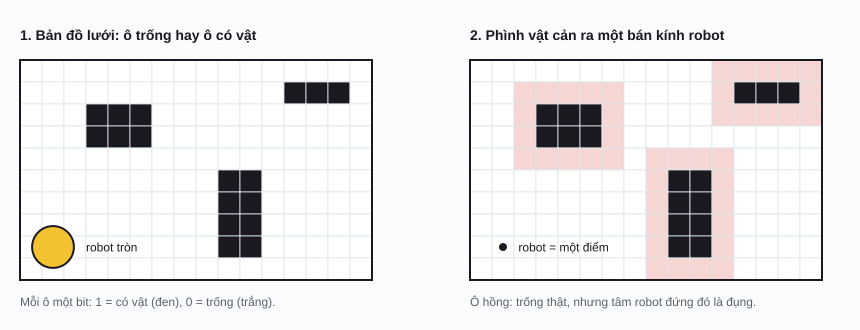
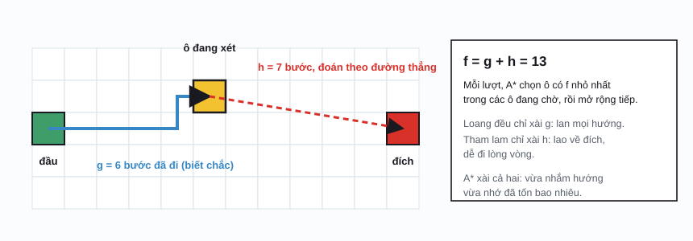
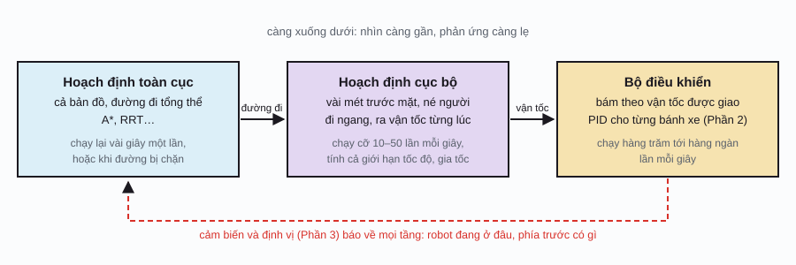

Robotics / Phần 4
Tìm đường
Robot đã biết mình đang ở đâu (Phần 3). Giờ ai đó bấm “đi tới phòng bếp”. Đi đường nào để khỏi đụng ghế, đụng tường, mà lại đừng đi vòng vèo? Bài toán này gọi là hoạch định đường đi (path planning), và cách giải nó cũng chính là cách Google Maps chỉ đường hay nhân vật trong game tìm tới bạn.
Bài toán và tấm bản đồ
Đầu vào gồm ba thứ: chỗ đứng hiện tại, chỗ muốn tới, và bản đồ cho biết chỗ nào đi được. Đầu ra là một đường đi không đụng gì, và thường là “tốt nhất” theo một tiêu chí: ngắn nhất, nhanh nhất, hay an toàn nhất (tránh xa người và mép cầu thang).
Cách tả bản đồ phổ biến nhất là bản đồ lưới ô chiếm chỗ (occupancy grid): chia mặt sàn thành ô vuông, cỡ 5 phân một ô, mỗi ô ghi “trống” hay “có vật”. Robot hút bụi vẽ ra đúng cái bản đồ này bằng SLAM ở Phần 3.
Mẹo nhỏ mà quan trọng: robot đâu phải một chấm, nó có thân. Thay vì mỗi bước phải kiểm tra cả cái thân có đụng gì hông, người ta phình vật cản ra đúng bằng bán kính robot. Sau đó coi robot như một điểm: điểm đó đi được ở đâu thì thân robot cũng lọt ở đó.

Tìm trên lưới: loang đều, tham lam, A*
Có bản đồ lưới rồi, tìm đường là bài toán tìm kiếm: từ ô đầu, xét dần các ô kề bên cho tới khi chạm đích. Khác nhau ở chỗ xét ô nào trước:
- Loang đều (breadth-first search, BFS; trên lưới mà bước nào cũng tốn như nhau thì nó trùng với thuật toán Dijkstra): xét ô gần điểm đầu trước, ô xa sau, giống nước đổ ra sàn loang đều mọi phía. Chắc chắn ra đường ngắn nhất, nhưng phí công xét cả những ô ở phía ngược với đích.
- Tham lam (greedy best-first search): luôn xét ô trông có vẻ gần đích nhất. Lao thẳng về đích nên rất lẹ, nhưng gặp ngõ cụt thì lúng túng, và đường tìm ra có thể vòng vèo.
- A* (đọc là “A sao”): mỗi ô được chấm một điểm gồm hai phần, đã đi bao xa cộng với còn phải đi chừng bao xa, rồi xét ô có tổng nhỏ nhất.

n: một ô; g(n): số bước đã đi từ điểm đầu tới n, theo đường tốt nhất tìm được tới giờ; h(n): hàm ước lượng (heuristic), đoán số bước còn lại tới đích. Trên lưới đi 4 hướng, người ta lấy khoảng cách “kiểu bàn cờ” \(|x_n - x_{\text{đích}}| + |y_n - y_{\text{đích}}|\), tức đi ngang rồi đi dọc, bỏ qua tường. Vì h hổng bao giờ đoán dư so với thật, A* bảo đảm ra đường ngắn nhất.
Tìm đường trên lưới
Vẽ tường, kéo điểm đầu và đích, so ba cách tìmNhững điều có thể kiểm tra trên minh họa:
- Với bức tường chữ U có sẵn, cả ba cách đều ra đường 37 bước, nhưng công sức khác hẳn: loang đều xét 590 ô (gần hết bản đồ), A* xét 224 ô, tham lam xét 143 ô. Bấm “Chạy hoạt hình” để coi: tham lam chui tọt vô lòng chữ U rồi mới lần mò ra.
- Bấm “Lối đi ngẫu nhiên” vài lần rồi chọn “Tham lam”: rất hay gặp cảnh đường của nó dài hơn đường ngắn nhất. Tui thử 189 bản đồ ngẫu nhiên có lời giải thì gặp 103 lần, cỡ phân nửa. A* thì lần nào cũng ra đúng đường ngắn nhất.
- Xóa hết tường: A* đi thẳng một mạch, chỉ xét đúng mấy ô trên đường đi.
A* ra đời năm 1968 cho robot Shakey ở Viện Nghiên cứu Stanford, và tới giờ vẫn là nền của các bộ tìm đường trong robot, game và bản đồ số. Mấy hệ chỉ đường cho xe hơi xài thêm nhiều mẹo tính sẵn để chạy lẹ trên bản đồ cả nước, nhưng ý tưởng “đã đi bao xa + còn chừng bao xa” vẫn y vậy.
Không gian cấu hình: tìm đường cho cánh tay
Với xe chạy trên sàn, “vị trí” là hai con số (x, y), nên tìm đường trên bản đồ sàn nhà là hợp lý. Còn cánh tay robot ở Phần 1 thì sao? Muốn biết nó có đụng cái bình hông, phải biết góc của mọi khớp. Vậy hãy vẽ bản đồ theo các góc khớp: mỗi điểm trên bản đồ là một tư thế đầy đủ của cánh tay. Bản đồ đó gọi là không gian cấu hình (configuration space, C-space), ý tưởng của Tomás Lozano-Pérez đầu thập niên 1980.
Trong không gian cấu hình, cả cánh tay biến thành một điểm, còn vật cản biến thành những vùng “tư thế cấm”. Tìm đường cho cánh tay né vật cản chỉ còn là tìm đường cho một điểm né những vùng đó, y như bài toán lưới ở trên.
Không gian cấu hình của cánh tay
Mỗi điểm bên phải là một tư thế của cánh tay bên tráiNhững điều có thể kiểm tra trên minh họa:
- Rê chấm vàng bên phải chạm vô mảng đỏ: cánh tay bên trái đụng vật cản đỏ. Hai vùng màu chính là bản đồ “tư thế cấm”.
- Kéo vật cản tím lại gần đế robot: mảng tím bên phải phình to ra, vì vật cản càng gần đế thì càng nhiều tư thế đụng nó (khâu 1 quét qua là đụng, bất kể khâu 2).
- Đặt hai vật cản sát nhau: có khi hai mảng nhập lại chặn đứt bản đồ, cánh tay hổng có cách nào đi từ tư thế này qua tư thế kia.
RRT: rải cây ngẫu nhiên
Ý tưởng của Steven LaValle (1998) nghe như chơi mà hiệu quả bất ngờ: khỏi chia lưới, cứ bốc ngẫu nhiên một điểm trong không gian, rồi cho cây mọc về phía nó một chút. RRT (rapidly-exploring random tree) lặp lại mấy bước sau:
- Bốc một điểm ngẫu nhiên. Thỉnh thoảng (ví dụ 5% số lần) bốc thẳng điểm đích, để cây có khuynh hướng mọc về phía đích.
- Tìm nút trên cây gần điểm đó nhất.
- Từ nút đó, mọc một nhánh ngắn hướng về điểm vừa bốc. Nếu nhánh đụng vật cản thì bỏ, khỏi mọc.
- Nếu nhánh mới đủ gần đích và nối thẳng được: xong, lần ngược theo cây là ra đường đi.
Vì điểm bốc ngẫu nhiên rơi vô vùng trống lớn nhiều hơn, cây tự động lan về những chỗ chưa khám phá, “phủ” không gian rất lẹ. Và nó chỉ cần đúng một khả năng: kiểm tra một tư thế có đụng hông. Bởi vậy nó chạy được cho cánh tay 7 khớp, robot hình người hàng chục khớp, hay xe có ràng buộc quẹo cua.
RRT: rải cây ngẫu nhiên
Cây mọc từ điểm đầu, lan khắp chỗ trống cho tới khi chạm đíchĐường RRT tìm ra thường ngoằn ngoèo vì toàn là bước ngẫu nhiên. Một lần chạy thử của tui ra đường dài 26 m; bấm “Làm mượt đường” hai lần (nối tắt các đoạn nhìn thấy nhau) thì còn 19,5 m. RRT bảo đảm sớm muộn gì cũng tìm ra đường nếu có, nhưng hổng bảo đảm đường ngắn nhất. Bản cải tiến RRT* (Karaman và Frazzoli, 2011) thêm bước “nối lại” các nhánh cho gọn, nên càng chạy lâu đường càng tiến về ngắn nhất.
Từ đường đi tới chuyển động
Một đường đi vẽ trên bản đồ chưa phải là chuyển động. Robot thật còn phải lo: đường đó có quẹo gắt quá so với bánh xe hông, chạy nhanh cỡ nào ở khúc nào, và nếu có người bước ngang qua thì sao. Hệ điều hướng thực tế, như bộ Nav2 trong ROS 2 (hệ điều hành robot mã nguồn mở phổ biến nhất), chia việc thành ba tầng:

Thêm vài chuyện đời thực:
- Vật cản di động. Người, xe đẩy, con mèo hổng có trên bản đồ. Tầng cục bộ thấy chúng qua lidar, camera, rồi né tại chỗ; nếu bị chặn hẳn thì báo tầng toàn cục tìm đường khác.
- Ràng buộc chuyển động. Xe hơi hổng đi ngang được, phải quẹo theo cung tròn. Người ta tìm đường trong không gian (x, y, hướng xe), ví dụ với “A* lai” (hybrid A*) mà xe tự lái của Stanford dùng để đậu xe trong cuộc thi DARPA Urban Challenge 2007.
- Quỹ đạo theo thời gian. Đường đi chỉ nói đi qua đâu; quỹ đạo (trajectory) nói thêm lúc nào tới đâu, với vận tốc bao nhiêu, sao cho êm, khỏi giật, khỏi vượt giới hạn động cơ.
Từ điển nhỏ
| Thuật ngữ | Tiếng Anh | Nói đơn giản |
|---|---|---|
| Hoạch định đường đi | path planning | Tìm đường từ chỗ này tới chỗ kia mà hổng đụng gì. |
| Bản đồ lưới ô chiếm chỗ | occupancy grid | Mặt sàn chia ô, mỗi ô ghi trống hay có vật. |
| Phình vật cản | obstacle inflation | Nới vật cản ra một bán kính robot để coi robot như một điểm. |
| Loang đều | breadth-first search (BFS) | Xét ô gần trước, xa sau, theo mọi hướng. |
| Tìm kiếm tham lam | greedy best-first search | Luôn xét ô trông gần đích nhất. |
| A* | A-star | Xét ô có (đã đi + còn ước chừng) nhỏ nhất. |
| Hàm ước lượng | heuristic | Cách đoán nhanh còn bao xa nữa tới đích. |
| Không gian cấu hình | configuration space (C-space) | Bản đồ mà mỗi điểm là một tư thế đầy đủ của robot. |
| RRT | rapidly-exploring random tree | Cây mọc dần về các điểm bốc ngẫu nhiên. |
| Hoạch định toàn cục / cục bộ | global / local planner | Tìm đường trên cả bản đồ / né vật trước mặt từng lúc. |
| Quỹ đạo | trajectory | Đường đi kèm thời gian và vận tốc ở từng chỗ. |
Phụ lục: ký hiệu toán học
Ký hiệu toán học trên trang này. Cột giữa là cách đọc trong tài liệu tiếng Anh.
| Ký hiệu | Đọc (tiếng Anh) | Ý nghĩa, nói đơn giản |
|---|---|---|
| \(f(n)\) | f of n | Điểm của ô n trong A*: tổng g và h. |
| \(g(n)\) | g of n | Quãng đường đã đi từ điểm đầu tới n. |
| \(h(n)\) | h of n | Ước lượng quãng đường còn lại từ n tới đích. |
| \(|a|\) | absolute value of a | Giá trị tuyệt đối: bỏ dấu trừ. |
| \(10^{12}\) | ten to the twelfth | Một ngàn tỷ (số 1 với 12 số 0). |
Lịch sử
- 1959
Thuật toán Dijkstra
Edsger Dijkstra công bố cách tìm đường ngắn nhất trên đồ thị có trọng số. Ông kể đã nghĩ ra nó trong khoảng hai chục phút, ngồi uống cà phê ở Amsterdam năm 1956.
- 1966–72
Robot Shakey
Ở Viện Nghiên cứu Stanford (SRI), Shakey là robot di động đầu tiên tự lập kế hoạch hành động. Để nó tìm đường, Peter Hart, Nils Nilsson và Bertram Raphael công bố thuật toán A* năm 1968.
- 1983
Không gian cấu hình
Tomás Lozano-Pérez (MIT) đưa ra cách nhìn “cả robot là một điểm trong không gian cấu hình”, nền tảng của hoạch định chuyển động.
- 1996
Bản đồ lộ trình xác suất
Kavraki, Švestka, Latombe và Overmars đề xuất PRM: rải điểm ngẫu nhiên khắp không gian cấu hình rồi nối thành mạng đường, mở màn các phương pháp dựa trên lấy mẫu.
- 1998
RRT
Steven LaValle giới thiệu cây ngẫu nhiên RRT, nhanh chóng thành công cụ chuẩn cho cánh tay robot và xe tự hành.
- 2007
DARPA Urban Challenge
Xe tự lái chạy trong khu phố giả lập, phải nhường đường, đậu xe. Đội Đại học Carnegie Mellon thắng; xe của Stanford dùng “A* lai” để tìm đường có tính tới cách xe quẹo.
- 2011
RRT*
Sertac Karaman và Emilio Frazzoli chứng minh bản cải tiến RRT* tiến dần về đường ngắn nhất khi chạy đủ lâu.
Tài liệu tham khảo
- S. M. LaValle, Planning Algorithms, Cambridge University Press, 2006 (bản điện tử miễn phí trên trang của tác giả).
- P. E. Hart, N. J. Nilsson, B. Raphael, “A Formal Basis for the Heuristic Determination of Minimum Cost Paths”, IEEE Transactions on Systems Science and Cybernetics, 1968.
- E. W. Dijkstra, “A Note on Two Problems in Connexion with Graphs”, Numerische Mathematik 1, 1959.
- T. Lozano-Pérez, “Spatial Planning: A Configuration Space Approach”, IEEE Transactions on Computers, 1983.
- S. Karaman, E. Frazzoli, “Sampling-based Algorithms for Optimal Motion Planning”, International Journal of Robotics Research, 2011.
- A. Patel, Introduction to the A* Algorithm, Red Blob Games (giải thích bằng minh họa tương tác rất dễ hiểu).